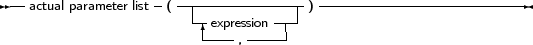
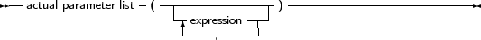

_________________________________________________________________________________________________________Function calls 

___________________________________________________________________
Function calls are part of expressions (although, using extended syntax, they can be statements too). They are constructed as follows:
_________________________________________________________________________________________________________Function calls

___________________________________________________________________
The variable reference must be a procedural type variable reference. A method designator can only be used inside the method of an object. A qualified method designator can be used outside object methods too. The function that will get called is the function with a declared parameter list that matches the actual parameter list. This means that
If no matching function is found, then the compiler will generate an error. Which error depends - among other things - on whether the function is overloaded or not: i.e. multiple functions with the same name, but different parameter lists.
There are cases when the compiler will not execute the function call in an expression. This is the case when assigning a value to a procedural type variable, as in the following example:
Type
FuncType = Function: Integer; Var A : Integer; Function AddOne : Integer; begin A := A+1; AddOne := A; end; Var F : FuncType; N : Integer; begin A := 0; F := AddOne; { Assign AddOne to F, Don’t call AddOne} N := AddOne; { N := 1 !!} end. |
In the above listing, the assigment to F will not cause the function AddOne to be called. The assignment to N, however, will call AddOne.
A problem with this syntax is the following construction:
If F = AddOne Then
DoSomethingHorrible; |
Should the compiler compare the addresses of F and AddOne, or should it call both functions, and compare the result? Free Pascal solves this by deciding that a procedural variable is equivalent to a pointer. Thus the compiler will give a type mismatch error, since AddOne is considered a call to a function with integer result, and F is a pointer, hence a type mismatch occurs.
How then, should one check whether F points to the function AddOne? To do this, one should use the address operator @:
If F = @AddOne Then
WriteLn (’Functions are equal’); |
The left hand side of the boolean expression is an address. The right hand side also, and so the compiler compares 2 addresses. How to compare the values that both functions return ? By adding an empty parameter list:
If F()=Addone then
WriteLn (’Functions return same values ’); |
Remark that this behaviour is not compatible with Delphisyntax. Switching on Delphi mode will allow you to use Delphisyntax.